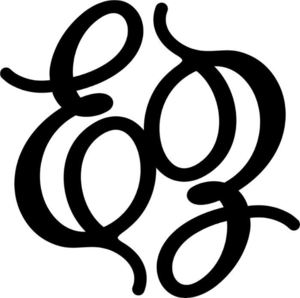

Trade Mark Journal No.2025/019 9 May 2025
WO0000001850663 (18,21,26)
Office of origin: Australia
Date of International Registration:28 January 2025
Date of designation in the UK:
28 January 2025

International priority date claimed: 1 August 2024
(Australia)
(2470836)
- Class 18
- Bags; carrying bags; belt bags; bag straps; bags for clothes; luggage and carrying bags; articles of luggage being bags; luggage; traveling bags; waist bags; travel bags; travelling bags; bags of leather; work bags; bags for carrying pets; carry-all bags; carry-on bags; sports bags; bags for umbrellas; bags for sports clothing; bags, of leather, for packaging; kit bags; woven bag; overnight bags; straps for bags; bags [envelopes, pouches] of leather, for packaging; luggage, bags, wallets and carrying bags; shoulder bags; bags made of leather; wheeled bags; wallets and carrying bags; flight bags; camping bags; courier bags; leather bags, suitcases and wallets; gym bags; bags [envelopes, pouches] of leather, for merchandise packaging; leather bags; trunks and traveling bags; duffel bags for travel; bags for men; garment bags for travel; bucket bags; shoe bags for travel; knitted bags; backpacks; airline travel bags; duffel bags; baggage; trunks and travelling bags; sport bags; mesh bags for shopping; knitting bags; bags [envelopes, pouches] of leather, for packaging jewellery; duffle bags for travel; roll bags; net bags for shopping; travel purses [handbags]; frames for bags; packaging bags of leather; duffle bags; straps for purses [handbags]; bags [envelopes, pouches] of leather, for packaging jewelry; purses; garment bags for travel, carriers for shirts and dresses; woven bags; men's bags; school bags; bags for holding make-up, keys and other personal belongings; leather bags for merchandise packaging [envelopes, pouches]; saddle bags; leather bags and wallets; bags for climbers; Boston bags; leather bags for packaging; suitcases; key bags; leather shopping bags; bum bags; wheeled shopping bags; luggage straps; mesh shopping bags; travel baggage; travel bags in canvas; hip bags; hobo bags; traveling suitcases; all-purpose carrying bags; bags for holding make-up, keys and other personal items; suitcases [carrying cases]; carrying bags for toys; messenger bags; travelling suitcases; travel luggage; grocery tote bags; canvas bags for shopping; tags for luggages; chain mesh bags; trunks and suitcases; belt bags and hip bags; textile shopping bags; leather purses [handbags]; garment bags for travel made of leather; bags of leather for packaging jewellery; string bags for shopping; tool bags, empty; children's shoulder bags; athletic bags; clutch bags; athletics bags; make-up bags, empty; all-purpose sports bags; bags of imitation leather; luggage straps of leather; backpacks for carrying babies; bags of leather and imitation leather for transporting animals; tool bags of leather, empty; pouches of leather; purses [handbags] of imitation leather; wash bags, not fitted; purses [handbags] of precious metal; all-purpose baggage and bags with handles; trolley duffel bags; clutch purses [handbags]; toiletry bags, empty; holdalls bags; baggage tags; wash bags for carrying toiletries; pouches, of leather, for packaging; leather tool bags, empty; leather suitcases; bags of leather and imitation leather for carrying animals; suitcase tags; beach bags; covers for luggage; all-purpose luggage and bags with handles; terrycloth bags; sportsman's hunting bags; leather purses; bags made from imitation leather; wheeled suitcases; game bags; luggage covers; wash bags, not fitted, for carrying toiletries; bags made of imitation leather; canvas shopping bags; leather bags for packaging jewelry; travel handbags; belt pouches; all purpose sports bags; straps for suitcases; traveling bags [leatherware]; luggage tags; straps for handbags; evening bags; towelling bags; luggage tags for travel baggage; travelling bags [leatherware]; music bags; bags and holdalls for sports clothing; tags for baggages; animal carriers [bags]; all purpose luggage and bags with handles; hat boxes for travel; leisure bags; diaper bags; small bags for men; all purpose baggage and bags with handles; wash bags, empty; canvas travel bags; bags made of leather for packaging jewelry; tote bags; leather travelling suitcases; trunks [luggage]; suit bags for travel; leather bags for packaging jewellery; handbags; trolley bags; holdall bags; straps for luggage; purses of leather; handbag straps; clutch bags [hand bags]; bags of leather for packaging jewelry; nappy bags; bags made of leather for packaging jewellery.
- Class 21
- Storage jars; storage jars of glass; glass jars for storage; storage pots; food storage jars; glass storage jars; household storage containers for pet food; containers for household use; cosmetic bags, fitted; soap containers; plastic containers for household use; plastic storage containers for household or domestic use; plastic containers for domestic use; plastic containers for household purposes; plastic containers for kitchen use; plastic containers for household or kitchen use; cosmetic applicators; household containers for storing and organizing make-up; plastic storage containers for domestic use; cosmetic brushes; plastic storage containers for household use; plastic storage containers for domestic purposes; brushes for cleaning containers; liquid soap dispensing bottles; cosmetic sponges; sponges for cosmetic use; droppers for cosmetic purposes; containers for aromatic potpourris; applicators for cosmetics.
- Class 26
- Buckles for bags; clasps for bags; zippers for bags; zip fasteners for bags.
ETOILE COLLECTIVE PTY. LTD.
Representative: ETOILE COLLECTIVE PTY. LTD., U 3 125 Rooks Rd, Nunawading VIC 3131, AUSTRALIA